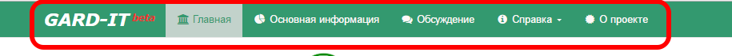

2 Доступ к системе
Система представляет собой кроссплатформенное веб-приложение, расположенное по адресу http://map.gard-it.ru. Перейдя по указанной ссылке пользователь попадает на главную страницу приложения: 
В верхней части экрана расположены навигационные вкладки (ниже на рис. обведены красным), переключаясь между которыми, пользователь может выбрать интересующий раздел приложения: 
На вкладке Главная пользователю доступна возможность активации мобильной версии приложения, которая оптимизирует работу на устройствах Android и iOS. Для дальнейшей работы с приложением пользователю необходимо определить свой уровень доступа.
Приложение предоставляет пользователям два уровня доступа:
- общий доступ;
- привилегированный доступ (данные для доступа рассылаются персонально участникам проекта).
Уровень доступа пользователя определяет его возможности при работе с приложением. Все пользователи по умолчанию имеют общий уровень доступа. Пользователи с привилегированным уровнем доступа имеют возможность просматривать дополнительные показатели внутри города, в остальном возможности пользователей с привилегированным и общим доступом совпадают. Пользователям, не имеющим привилегированного доступа, следует пропустить шаги, описанные ниже и перейти к интересующим вкладкам приложения.
Для входа в приложение с привилегированными правами доступа необходимо на вкладке Главная нажать кнопку Войти (ниже на рис. обведена красным цветом).

После этого действия появится всплывающее окно Привилегированный доступ, где пользователю необходимо ввести Имя пользователя и Пароль, а затем нажать кнопку Принять (ниже на рис. обведена красным цветом).
В случае успешного входа и получения привилегированного доступа приложение сообщит об этом пользователю. Чтобы выйти из открывшегося окна регистрации необходимо нажать Закрыть (ниже на рис. обведена красным цветом).
После закрытия всплывающего окна Привилегированный доступ пользователь попадает на вкладку Главная, где, в случае успешного входа и получения привилегированного доступа, отображается сообщение и появляется кнопка Выйти (см. рис. ниже). Чтобы пользователю с привилегированным доступом выйти из приложения и получить права общего доступа необходимо на вкладке Главная нажать кнопку Выйти (на рис. ниже обведена красным).
После получения прав привилегированного доступа/общего доступа, можно переходить к интересующим вкладкам приложения и приступать к анализу данных.